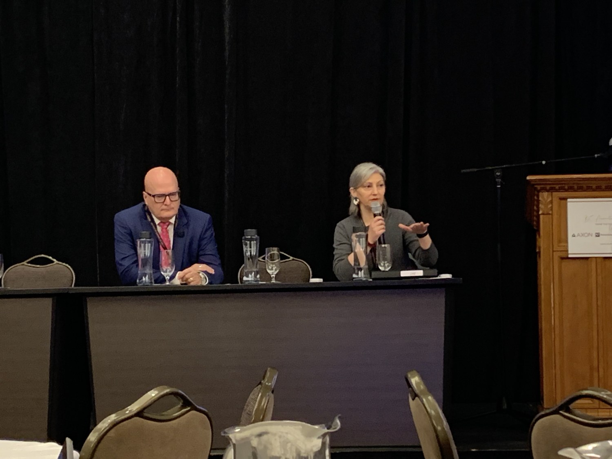
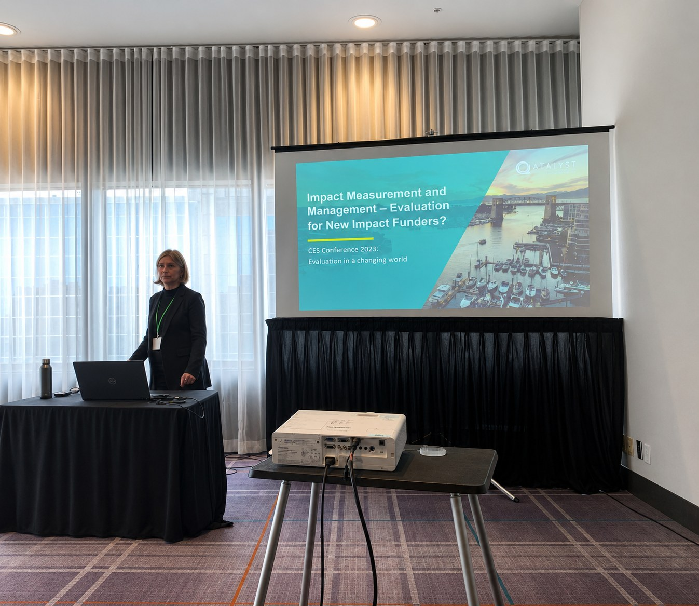

Public policy in conversation
Discussing the implementation and effects of British Columbia’s decriminalization policy.
05 / THOUGHT LEADERSHIP
Writing, speaking, and conversation are part of how I learn. I explore the changing practice of evaluation, responsible AI, and what it means to measure impact well.
IN CONVERSATION
A conversation with Maria Montenegro about AI in evaluation consulting, the importance of human judgement, and how professionals can adapt as their work changes.
Listen on SpotifySELECTED WRITING
SPEAKING & PRESENTATIONS

Discussing the implementation and effects of British Columbia’s decriminalization policy.

Presenting ideas on measuring and managing impact, with a focus on how evidence informs decisions.
SERVICE & MENTORSHIP
Former Vice President, BC Chapter · DEI Chair
Contributed to chapter leadership, professional learning, and conversations about diversity, equity, and inclusion in evaluation.
Board member
Contributing to the development of useful, flexible approaches to impact measurement for social purpose organizations.
Supporting the next generation
Developing colleagues through constructive feedback, thoughtful questions, and opportunities to take ownership. I care about helping people meet their own career goals while doing excellent work.